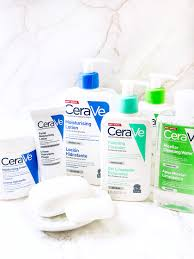

Garnier Cuidado de la piel con fórmulas suaves e ingredientes derivados naturalmente para dejar una piel de aspecto fresco y saludable, sea cuál sea tu tipo de piel. Encuentra el producto limpiador, hidratante o mascarilla para ti.


| CUIDADO CON LA PIEL | ||
| Garnier | Garnier Cuidado de la piel con fórmulas suaves e ingredientes derivados naturalmente para dejar una piel de aspecto fresco y saludable, sea cuál sea tu tipo de piel. Encuentra el producto limpiador, hidratante o mascarilla para ti. |
|
| Agua de rosas | Combina los beneficios antioxidantes del Agua de Rosas con el poder hidratante del Ácido Hialurónico para darle a tu piel 100% de hidratación, dejándola suave y radiante. | |
| CeraVe | Hidratante diaria para manos, rostro y cuerpo, para piel seca a mas seca. Contiene 3 ceramidas esenciales que ayudan a restaurar la barrera de la piel, ácido hialurónico y tecnología MVE para brindar una hidratación continua durante 24 Horas. |  |
| Loreal | Skin Genius ha sido desarrollado por L'Oréal Research, basado en 30 años de datos clínicos y respaldado por publicaciones científicas de dermatólogos. Si bien la experiencia no es la misma que una consulta en vivo, los resultados tienen una precisión de hasta el 95 % en comparación con la evaluación de un dermatólogo. | |